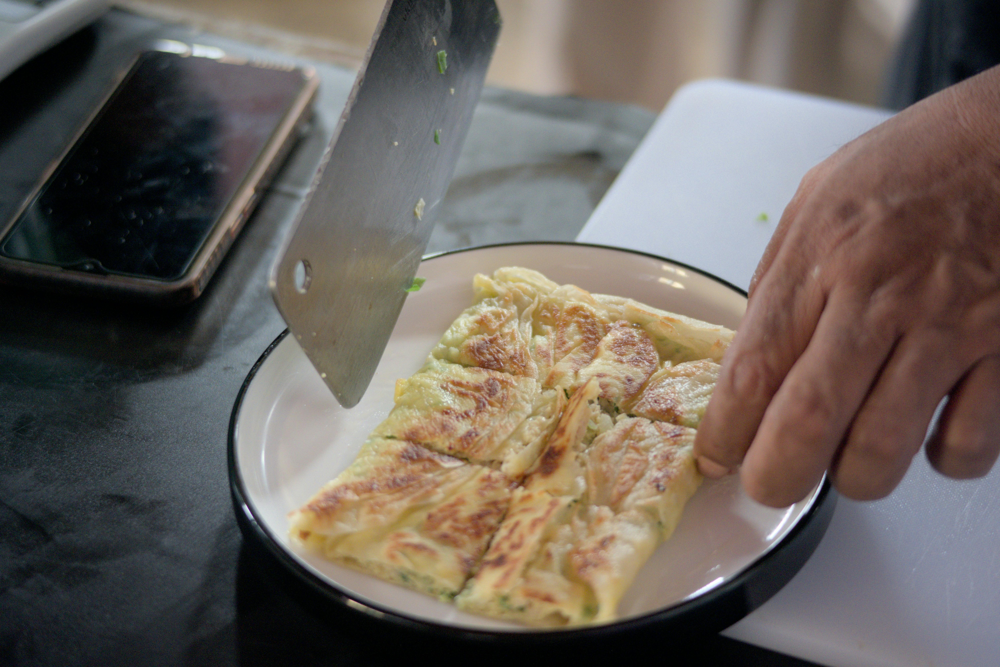

A breakfast egg roll is a handheld, savory fusion dish that replaces traditional Asian-style fillings with classic morning staples like scrambled eggs, bacon, and sausage.
These ingredients are encased in a thick wheat-flour wrapper and fried until the exterior is golden and shatteringly crisp, while the inside remains tender and gooey with melted cheese.